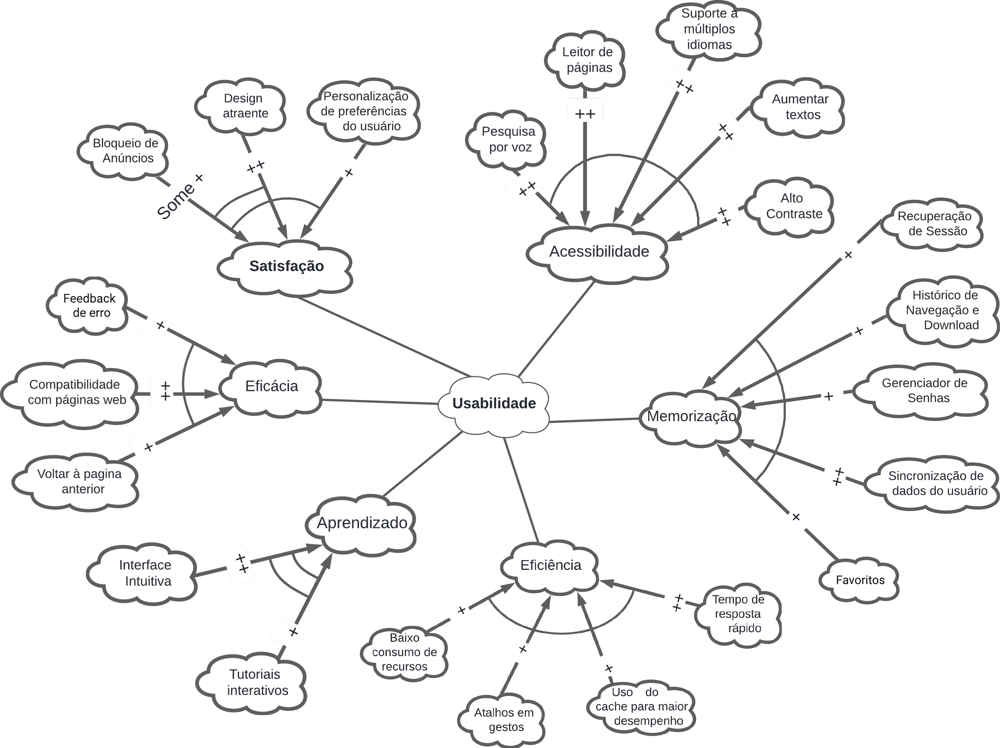

NFR Framework
Introdução
O NFR (Non-Functional Requirements) Framework, ou Framework de Requisitos Não Funcionais, é uma metodologia essencial na engenharia de software. Ele se concentra na definição e gerenciamento de requisitos que não estão diretamente ligados às funcionalidades do sistema, mas sim às suas características qualitativas, como desempenho, segurança, usabilidade e outros aspectos que afetam a experiência do usuário. Esses requisitos são cruciais para o sucesso do projeto, pois definem como o sistema deve operar em diversos cenários.
O framework utiliza o conceito de "softgoals", que são objetivos sem critérios específicos de satisfação. Softgoals representam requisitos não funcionais e podem influenciar uns aos outros (CHUNG et al., 2000).
Os gráficos de interdependência de softgoals, conhecidos como Softgoal Interdependency Graphs (SIGs), são usados pelo NFR Framework para capturar e representar essas interdependências e decisões de desenvolvimento. Esses gráficos documentam detalhadamente as decisões, alternativas e justificativas, permitindo uma avaliação abrangente dos requisitos (CHUNG et al., 2000).
Os softgoals são divididos em três categorias:
- Softgoals NFR: Representam os requisitos não funcionais.
- Softgoals de Operacionalização: Soluções práticas para satisfazer os softgoals NFR.
- Softgoals de Afirmação: Consideram características do domínio, como prioridades e carga de trabalho.
Figura 1: Tipos de Softgoals

Autor: Kauan Eiras, desenvolvido no Canva, 2024.
Tipos de Refinamentos
Os refinamentos são essenciais para detalhar os softgoals, permitindo uma decomposição precisa e estruturada. Eles são divididos em quatro tipos principais [2]:
A) Decomposição de Softgoal NFR: Segmenta um softgoal NFR em subobjetivos mais específicos, ajudando a esclarecer e detalhar requisitos não funcionais complexos.
B) Decomposição de Softgoal de Operacionalização: Subdivide um softgoal de operacionalização em objetivos mais granulares, facilitando a definição de soluções práticas e específicas.
C) Decomposição de Softgoal de Afirmação (Claims): Refina softgoals de afirmação em subobjetivos adicionais, permitindo a criação de justificativas robustas para decisões de projeto.
D) Priorização: Cria softgoals similares, mas com prioridades definidas, ajudando na determinação da importância relativa de cada objetivo.
Figura 2: Tipos de Refinamentos

Autor: CHUNG, 2000.
Tipos de Contribuições
As contribuições descrevem como um softgoal descendente pode impactar o softgoal ascendente. Existem várias formas de contribuição, cada uma com seu próprio impacto específico:
Tabela 1: Tipos de Contribuições
| Contribuição | Descrição | Notação |
|---|---|---|
| MAKE | Filho com contribuição tão positiva que satisfaz o Pai | ++ |
| HELP | Filho com contribuição positiva parcial, que sozinho não satisfaz o Pai | + |
| UNKNOWN | Filho não afeta o Pai | ? |
| HURT | Filho com contribuição negativa parcial, que sozinho não nega o Pai | - |
| BREAK | Filho com contribuição tão negativa que nega o Pai | -- |
| SOME + | Filho com contribuição positiva, cuja intensidade é desconhecida | SOME + |
| SOME - | Filho com contribuição negativa, cuja intensidade é desconhecida | SOME - |
| AND | Pai é satisfeito se todos os filhos forem satisfeitos | AND |
| OR | Pai é satisfeito se um dos filhos for satisfeito | OR |
| EQUAL | Ambos compartilham o mesmo rótulo | = |
Figura 3: Contribuições entre Softgoals
Autor: SERRANO, 2019.
Procedimento de Avaliação
O processo de avaliação dos softgoals verifica o grau de satisfação de cada requisito não funcional. Para isso, são atribuídos rótulos aos softgoals, que podem incluir "satisfeito", "parcialmente satisfeito", "não atendido", "parcialmente não atendido", "conflitante" e "indeterminado". Este procedimento é crucial para garantir que todas as interdependências no SIG sejam adequadamente avaliadas e gerenciadas (CHUNG et al., 2000).
Figura 4: Rótulos da Propagação de Impactos
Autor: SILVA, 2019.
A avaliação detalhada e sistemática dos softgoals, bem como a visualização de suas interdependências e contribuições, são fundamentais para a modelagem eficaz de requisitos não funcionais, garantindo que os objetivos qualitativos do sistema sejam plenamente atendidos.
Metodologia
Neste documento, a metodologia adotada para a concepção do artefato foi fundamentada nos requisitos não funcionais (NFRs), que foram delineados com base no nosso documento de especificação suplementar. Utilizando o modelo FURPS+, definimos seis requisitos não funcionais, cada um sendo desenvolvido por um membro da equipe.
Os NFRs foram divididos em seis aspectos principais: Usabilidade, Confiabilidade, Desempenho, Suportabilidade, Interface e Implementação. A tabela 2 apresenta um resumo dos requisitos não funcionais definidos, a rastreabilidade, membro da equipe responsável pelo desenvolvimento do item:
Tabela 2: Requisitos não funcionais do Firefox
| ID | Tipo | Descrição | Rastreabilidade | Membro |
|---|---|---|---|---|
| NFR01 | Usabilidade | O navegador deve ser intuitivo e fácil de usar, permitindo uma navegação simples acessivel e eficiente. | BRS12, QST07, BRS21 | Kauan Eiras |
| NFR02 | Confiabilidade | O navegador deve ser altamente estável, minimizando travamentos e garantindo alta disponibilidade. O aplicativo deve estar disponível para uso 99.9% do tempo. | BRS01 | Davi Pierre |
| NFR03 | Desempenho | O navegador deve carregar páginas e executar operações rapidamente, com um tempo máximo de resposta de 1 segundo. | BRS01, BRS02 | Lucas Martins |
| NFR04 | Suportabilidade | O navegador deve ser compatível com os principais sistemas operacionais (Windows, macOS, Linux) e dispositivos móveis. | BRS05, BRS20 | Leonardo Aguiar |
| NFR05 | Interface | O navegador deve ter uma interface limpa e personalizável, proporcionando uma boa experiência visual e de uso. | OBS26, OBS19, ENT06 | Guilherme Westphall |
| NFR06 | Implementação | O navegador deve proteger os dados do usuário, oferecendo mecanismos robustos contra malware, phishing e outras ameaças. | IMP01, IMP02, IMP03, IMP04 | Kallyne Macedo |
Autor: Kauan Eiras, 2024.
Procedimento de Desenvolvimento
Cada membro da equipe foi responsável por um requisito específico, conforme detalhado na tabela acima. O processo envolveu as seguintes etapas:
-
Análise e Elicitação de Requisitos:
- A partir do documento de especificação suplementar, cada membro analisou e refinou os requisitos não funcionais atribuídos a ele.
-
Modelagem dos Requisitos com SIG:
- Para cada requisito, foi criado um SIG (Softgoal Interdependency Graph), que mapeou as interdependências entre os softgoals e documentou as alternativas e justificativas.
- O SIG foi essencial para visualizar como cada softgoal impacta os outros e como os requisitos poderiam ser satisfeitos.
-
Propagação de Impactos:
- Foi realizado um diagrama de propagação de impactos para entender como a implementação de cada NFR afetaria outros aspectos do sistema.
- Este diagrama ajudou a identificar possíveis efeitos colaterais e a planejar mitigações apropriadas.
-
Cartão de Especificação:
- Cada NFR foi documentado em um cartão de especificação, que incluía informações detalhadas sobre o requisito, como descrição, classificação, justificativa, origem, dependências, prioridade e possíveis conflitos.
- Este cartão serviu como uma referência centralizada para todas as informações críticas sobre o NFR.
NFR Framework
NFR01 - Usabilidade
De acordo com Jakob Nielsen, um dos principais teóricos da usabilidade, o termo "usabilidade" refere-se à facilidade com que os usuários podem aprender a utilizar um sistema, sua eficiência no uso, a facilidade de lembrar como usá-lo, a frequência de erros cometidos pelos usuários e a satisfação dos usuários com o sistema. Ele define os componentes principais da usabilidade como: eficácia, eficiência, aprendizado, memorização e satisfação (NIELSEN, 1993). Com a grande quantidade de pessoas analfabetas ou portadoras de alguma deficiência que utilizam a internet, outro item importante a ser incluso no NFR Framework de Usabilidade é a acessibilidade.
Softgoal Interdependency Graph
O SIG do softgoal "Usabilidade" é apresentado na Figura 5.
Figura 5: Softgoal Interdependency Grap do softgoal "Usabilidade"

Autor: Kauan Eiras, 2024.
Propagação de Impactos
A propagação de impactos do softgoal "Usabilidade" pode ser visto na figura 6.
Figura 6: Propagação de Impactos do softgoal "Usabilidade"

Autor: Kauan Eiras, 2024.
Cartão de Especificação
Na tabela 3, temos o cartão de especificação do softgoal "Usabilidade".
Tabela 3: Carta de Especificação do softgoal "Usabilidade"
| Tópico | Informação |
|---|---|
| ID do NFR | NFR01 |
| Classificação | Usabilidade |
| Descrição | O requisito "Usabilidade" refere-se à capacidade do Firefox de fornecer uma experiência de navegação intuitiva e eficiente, que seja fácil de aprender, lembrar e que minimize erros, garantindo a satisfação do usuário e acessibilidade. |
| Justificativa | Uma usabilidade boa é fundamental para garantir que os usuários possam navegar na web de forma eficiente e satisfatória, com ferramentas que atendam suas necessidades, aumentando a acessibilidade e reduzindo a frequência de erros. Isso resulta em uma experiência mais agradável e produtiva para todos os usuários, incluindo aqueles com deficiências. |
| Origem do Requisito | Especificação suplementar e requisitos elicitados. |
| Dependências | Não foram identificadas restrições ou dependências específicas, mas a atualização contínua da documentação e do sistema é necessária para manter a usabilidade elevada. |
| Prioridade | Alta. A usabilidade é crítica para a aceitação do navegador pelos usuários e influencia diretamente a eficácia e a satisfação no uso do sistema. |
| Conflitos | Não foram identificados conflitos. |
| História | 25/05/2024 |
Autor: Kauan Eiras, 2024.
NFR02 - Confiabilidade
O aspecto da confiabilidade refere-se à habilidade de um produto em executar uma função específica sob condições determinadas, por um período de tempo definido ou por uma quantidade específica de operações. As principais subcategorias que compõem a confiabilidade podem ser definidas como: disponibilidade, precisão e recuperabilidade (CHEMUTURI, 2010).
Softgoal Interdependency Graph
O SIG do softgoal "Confiabilidade" é apresentado na Figura 7.
Figura 7: Softgoal Interdependency Grap do softgoal "Confiabilidade"
Autor: Davi Pierre, 2024.
Propagação de Impactos
A propagação de impactos do softgoal "Confiabilidade" pode ser visto na figura 8.
Figura 8: Propagação de Impactos do softgoal "Confiabilidade"

Autor: Davi Pierre, 2024.
Cartão de Especificação
Na tabela 4, temos o cartão de especificação do softgoal "Confiabilidade".
Tabela 4: Carta de Especificação do softgoal "Confiabilidade"
| Tópico | Informação |
|---|---|
| ID do NFR | NFR01 |
| Classificação | Confiabilidade |
| Descrição | O requisito "Confiabiidade" refere-se a capacidade do navegador Firefox de se manter consistente durante todo o processo de acesso a internet, ou seja, ser capaz de lidar com falhas pequenas, ser acessível, ser versátil e disponível a qualquer momento. |
| Justificativa | Um alto nível de confiabilidade é necessário para que um navegador possa ser usado, um navegador não confiável leva a pesquisas mais demoradas, tempos de resposta mais longos e usuários insatisfeitos por uma mesma ação causar reações diferentes do aplicativo. |
| Origem do Requisito | Especificação suplementar e requisitos elicitados. |
| Dependências | Uma boa confiabiliade depende de uma segurança geral do aplicativo e da suportabilidade versátil do mesmo. |
| Prioridade | Alta. A confiabilidade é crítica para que os usuários possam ter uma experiência consistente e fluida durante o uso do aplicativo Firefox |
| Conflitos | Não foram identificados conflitos. |
| História | 26/05/2024 |
Autor: Davi Pierre, 2024.
NFR03 - Desempenho
Os requisitos de desempenho especificam as expectativas e limites relacionados à eficiência e capacidade de resposta de um sistema ou aplicativo. Eles são críticos para garantir que o software funcione de maneira eficaz sob várias condições de uso e carga (BERENBACH et al., 2009).
Softgoal Interdependency Graph
O SIG do softgoal "Desempenho" é apresentado na Figura 9.
Figura 9: Softgoal Interdependency Graph do softgoal "Desempenho"
Autor: Lucas Martins, 2024.
Propagação de Impactos
A propagação de impactos do softgoal "Desempenho" pode ser visto na figura 10.
Figura 10: Propagação de Impactos do softgoal "Desempenho"

Autor: Lucas Martins, 2024.
Cartão de Especificação
Na tabela 5, temos o cartão de especificação do softgoal "Desempenho".
Tabela 5: Carta de Especificação do softgoal "Desempenho"
| Tópico | Informação |
|---|---|
| ID do NFR | NFR03 |
| Classificação | Desempenho |
| Descrição | O requisito "Desempenho" refere-se à capacidade do Firefox de carregar páginas e executar operações rapidamente, com um tempo máximo de resposta de 1 segundo. Isso inclui a velocidade de carregamento de páginas, a eficiência na execução de scripts e a capacidade de resposta do navegador. |
| Justificativa | O desempenho é um fator crítico para a satisfação do usuário, influenciando diretamente a experiência de navegação e a eficácia do navegador. Um desempenho lento ou ineficiente pode levar à frustração do usuário, à perda de produtividade e à insatisfação geral com o navegador. |
| Origem do Requisito | Especificação suplementar e requisitos elicitados. |
| Critérios de Ajuste | - [ ] Descarte de objetos não usados. - [ ] Pré-carregamento de componentes críticos. - [ ] Compressão de imagens. - [ ] Pré-carregamento de CSS essenciais. - [ ] Uso de cache. - [ ] Minimização de processos em background. - [ ] Monitoramento da CPU. |
| Dependências | O desempenho depende de uma implementação eficiente das funcionalidades suportadas, como o carregamento de páginas, a execução de scripts e a resposta do navegador. Atualizações contínuas são necessárias para manter o desempenho do navegador. |
| Prioridade | Alta. O desempenho é um fator crítico para a satisfação do usuário e a eficácia do navegador, influenciando diretamente a experiência de navegação e a produtividade do usuário. |
| Conflitos | Não foram identificados conflitos. |
| História | 27/05/2024 |
Autor: Lucas Martins, 2024.
NFR04 - Suportabilidade
A Suportabilidade de Software é a capacidade de suportar um sistema de software durante toda a sua vida útil. Isso implica satisfazer todas as necessidades ou requisitos necessários, bem como a provisão de equipamentos, infraestrutura de suporte, software adicional, instalações, mão de obra ou qualquer outro recurso necessário para manter o software operacional e capaz de cumprir sua função. Com isso, por ser de grande importância para o produto de software ele deve ser incluso no NFR Framework (CHEMUTURI, 2010; BERENBACH et al., 2009).
Softgoal Interdependency Graph
O SIG do softgoal "Suportabilidade" é apresentado na Figura 11.
Figura 11: Softgoal Interdependency Graph do softgoal "Suportabilidade"
Autor: Leonardo Aguiar, 2024.
Propagação de Impactos
A propagação de impactos do softgoal "Suportabilidade" pode ser visto na figura 10.
Figura 12: Propagação de Impactos do softgoal "Suportabilidade"
Autor: Leonardo Aguiar, 2024.
Cartão de Especificação
Na tabela 6, temos o cartão de especificação do softgoal "suportabilidade".
Tabela 6: Carta de Especificação do softgoal "suportabilidade"
| Tópico | Informação |
|---|---|
| ID do NFR | NFR04 |
| Classificação | suportabilidade |
| Descrição | O requisito "suportabilidade" refere-se à capacidade do Firefox de corresponder às expectativas do usuário quanto à ajuda que ele vai receber ao usar o software. Isso inclui a frequência com que ele é atualizado, o auxílio em relação a erros, a capacidade de manutenção e correção, os aparelhos e sistemas nos quais ele funciona, a dificuldade de instalação e a capacidade de se adaptar às necessidades do usuário. |
| Justificativa | A suportabilidade é extremamente importante para a satisfação do usuário, influenciando tanto indiretamente quanto diretamente a experiência do mesmo. Um software que não tem uma boa suportabilidade acaba ficando obsoleto. |
| Origem do Requisito | Especificação suplementar e requisitos elicitados. |
| Critérios de ajuste | - [ ] Suporte de aparelhos celulares e desktop. - [ ] Suporte de sistemas mac, ios, android, linux e windows. - [ ] Validação das features implementadas. - [ ] Verificação das features implementadas. - [ ] Documentação de pelo menos 90%. - [ ] Testes de pelo menos 80%. - [ ] Atualizações com frequência de pelo menos 4 em 4 semanas. - [ ] Suporte online. - [ ] Acessibilidade com pelo menos pesquisa por voz e leitura de página. - [ ] personalização de favoritos, dados e aparência do navegador. - [ ] Controle parental. |
| Dependências | A suportabilidade depende de uma organização eficiente do mantenedor do software assim como da tecnologia disponível. |
| Prioridade | Alta. A suportabilidade de um software é de extrema importancia para um software acabando por influenciar tanto indiretamente quanto diretamente a experiência do usuário. |
| Conflitos | Não foram identificados conflitos. |
| História | 27/05/2024 |
Autor: Leonardo Aguiar, 2024.
NFR05 - Interface
Os requisitos de interface especificam as expectativas e padrões relacionados à apresentação e interação do usuário com um sistema ou aplicativo. Eles são essenciais para garantir que o software ofereça uma experiência de usuário intuitiva, acessível e agradável, facilitando a navegação, a compreensão e a utilização eficiente das funcionalidades disponíveis. Esses requisitos abrangem aspectos como design visual, consistência, acessibilidade, personalização e feedback do usuário, contribuindo para a satisfação e a aceitação do sistema por parte dos usuários (NIELSEN, 1993; BARBOSA et al., 2021).
Softgoal Interdependency Graph
Figura 13: Softgoal Interdependency Graph do softgoal "Interface"
Autor: Guilherme Westphall, 2024.
Propagação de Impactos
Figura 14: Softgoal Interdependency Graph do softgoal "Interface"
Autor: Guilherme Westphall, 2024.
Cartão de Especificação
Tabela 7: Cartão de especificação do softgoal de Interface
| Tópico | Informação |
|---|---|
| ID do NFR | NFR05 |
| Classificação | Interface |
| Descrição | O requisito "Interface" refere-se à capacidade do Firefox de oferecer interfaces de sistema que garantam um layout intuitivo e esteticamente agradável, compatibilidade com diferentes dispositivos e navegadores, feedback claro ao usuário, facilidade de aprendizado e opções de personalização. |
| Justificativa | Interfaces bem projetadas são fundamentais para garantir uma experiência de usuário positiva. Um layout intuitivo e agradável facilita a compreensão da interface, enquanto a compatibilidade garante que o Firefox seja acessível em diferentes ambientes. O feedback claro ao usuário é essencial para manter os usuários informados sobre o que está acontecendo no sistema. A facilidade de aprendizado torna o navegador acessível para novos usuários, enquanto as opções de personalização permitem que os usuários adaptem a interface às suas preferências individuais, aumentando a satisfação do usuário e a aceitação do navegador. |
| Origem do Requisito | Especificação suplementar e requisitos elicitados. |
| Critérios de ajuste | - [ ] A barra de pesquisa e os botões de ação devem estar na parte superior da tela. - [ ] O espaçamento entre os elementos deve ser uniforme em toda a interface. - [ ] A interface deve ser compatível com sistemas Android e iOS. - [ ] O usuário deve conseguir acessar as principais funcionalidades em até 3 cliques. - [ ] O tempo de resposta do site para pesquisas deve ser menos de 3 segundos. - [ ] As mensagens de erro devem conter "ERRO" escrito em vermelho. - [ ] O sistema deve fornecer uma confirmação quando uma ação for realizada com sucesso. - [ ] O usuário deve poder personalizar as cores do tema da interface, escolhendo entre pelo menos três opções diferentes. - [ ] O sistema deve apresentar um tutorial para orientar novos usuários sobre como usar as principais funcionalidades. |
| Dependências | A implementação bem-sucedida desses requisitos depende da integração eficiente dos elementos de layout, testes de compatibilidade em diferentes dispositivos e navegadores, implementação de mensagens de feedback claro, criação de recursos de aprendizado e desenvolvimento de opções de personalização. |
| Prioridade | Alta. A qualidade da interface impacta diretamente na experiência do usuário e na aceitação do navegador, tornando esses requisitos cruciais para o sucesso do Firefox. |
| Conflitos | Não foram identificados conflitos. |
| História | 27/05/2024 |
Autor: Guilherme Westphall, 2024.
NFR06 - Implementação
Os requisitos de implementação especificam as restrições e condições necessárias para a construção de uma aplicação. Eles indicam a maneira de desenvolvimento técnico, de estruturação e de manutenabilidade adotada (PRESSMAN, 2011);
Softgoal Interdependency Graph
O SIG do softgoal "Implementação" é apresentado na Figura 9.
Figura 15: Softgoal Interdependency Graph do softgoal "Implementação"
Autor: Kallyne Passos, 2024.
Propagação de Impactos
A propagação de impactos do softgoal "Implementação" pode ser visto na figura 16.
Figura 16: Propagação de Impactos do softgoal "Implementação"

Autor: Kallyne Passos, 2024.
Cartão de Especificação
Na tabela 8, temos o cartão de especificação do softgoal "Implementação".
Tabela 8: Carta de Especificação do softgoal "Implementação"
| Tópico | Informação |
|---|---|
| ID do NFR | NFR06 |
| Classificação | Implementação |
| Descrição | O requisito "Implementação" refere-se às restrições de construção, codificação, integração e manutenibilidade do Firefox, o que o torna vital no desenvolvimento de uma aplicação eficiente e sustentável. |
| Justificativa | Os requisitos de implementação guiam o desenvolvimento técnico do sistema, sendo essencial para a vida de uma apliicação sustentável e expansível. Sem uma implementação adequada, não há possibilidade de formar uma base de usuários. |
| Origem do Requisito | Especificação suplementar e requisitos elicitados. |
| Dependências | A implementação do sistema depende de uma definição assertiva de arquitetura e das restrições das tecnologias e ferramentas escolhidas para o desenvolvimento. |
| Prioridade | Alta. A implementação é estritamente necessária para que se ocorra o uso devido e esperado. |
| Conflitos | Não foram identificados conflitos. |
| História | 27/05/2024 |
Autor: Kallyne Passos, 2024.
Referências
- SILVA, Reinaldo Antônio. NFR4ES: Um Catálogo de Requisitos Não-Funcionais para Sistemas Embarcados. Centro de Informática UFPE, Recife, 2019. Disponível em: https://repositorio.ufpe.br/handle/123456789/34150. Acesso em: 25 de maio de 2024.
- CHUNG, L.; NIXON, B. A.; YU, E.; MYLOPOULOS, J. Non-functional requirements in software engineering. Springer Science & Business Media: [s.n.], 2000. v. 5.
- SERRANO, Maurício; SERRANO, Milene. Requisitos - Aula 17. 1º/2019. 7-28 slides. Material apresentado para a disciplina de Requisitos de Software no curso de Engenharia de Software da UnB, FGA.
- NIELSEN, Jakob. Usability Engineering. Boston: Academic Press, 1993. ISBN 0125184050, p. 24.
- Firefox Source Tree Documentation, 2024. Disponível em: https://firefox-source-docs.mozilla.org/index.html. Acesso em 26 de maio de 2024.
- CHEMUTURI, Murali. Mastering Software Quality Assurance: Best Practices, Tools and Techniques for Software Developers. Ft. Lauderdale, US: J. Ross Publishing Inc., 2010.
- BERENBACH, Brian; PAULISH, Daniel; KAZMEIER, Juergen; RUDORFER, Arnold. Software & Systems Requirements Engineering: In Practice. 1. ed. McGraw-Hill, 2009.
- PRESSMAN, Roger S. Software Engineering: A Practitioner's Approach. 7th ed. New York: McGraw-Hill, 2011.
Histórico de versões
| Versão | Data | Descrição | Autor | Revisor |
|---|---|---|---|---|
| 1.0 | 23/05/2024 | Criação da página e Introdução | Davi Pierre | Kauan Eiras |
| 1.1 | 23/05/2024 | Adição das Figuras 1, 2 e 3 e ajustes na Introdução | Kauan Eiras | Davi Pierre |
| 1.2 | 23/05/2024 | Criação da Metodologia | Kauan Eiras | Davi Pierre |
| 1.3 | 23/05/2024 | Desenvolvimento do NFR01 - Usabilidade | Kauan Eiras | Lucas Martins |
| 1.4 | 26/05/2024 | Desenvolvimento parcial do NFR02 - Confiabilidade | Davi Pierre | Lucas Martins |
| 1.5 | 26/05/2024 | Desenvolvimento completo do NFR02 - Confiabilidade | Davi Pierre | Lucas Martins |
| 1.6 | 27/05/2024 | Desenvolvimento do NFR05 - Interface | Guilherme Westphall | Lucas Martins |
| 1.7 | 27/05/2024 | Desenvolvimento do NFR03 - Desempenho | Lucas Martins | Guilherme Westphall |
| 1.8 | 27/05/2024 | Desenvolvimento do NFR04 - Suportabilidade | Leonardo Aguiar | Kauan Eiras |
| 1.9 | 27/05/2024 | Desenvolvimento do NFR06 - Implementação | Kallyne Macedo | Kauan Eiras |
| 2.0 | 30/05/2024 | Correções | Kauan Eiras | Guilherme Westphall |
| 2.1 | 05/06/2024 | Correção de imagens | Leonardo Aguiar | Kallyne Macedo |
| 2.2 | 29/06/2024 | Adiciona critérios de ajuste ao NFR05 | Guilherme Westphall | Leonardo Aguiar |
| 2.3 | 05/07/2024 | Correção de imagens e adição do tópico critérios de ajuste ao NFR04 | Leonardo Aguiar | Davi Pierre |
| 2.4 | 08/07/2024 | Adiciona critérios de ajuste ao NFR03 | Lucas Martins | Davi Pierre |